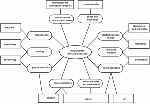

<div class="posterous_bookmarklet_entry">
<div class='p_embed p_image_embed'>

</div>
<div class="posterous_quote_citation">via <a href="http://www.ta.chalmers.se/education.php?page=mst_role">ta.chalmers.se</a></div>
<p>Nice chart from my department showing where Acoustics is used..</p>
</div>
